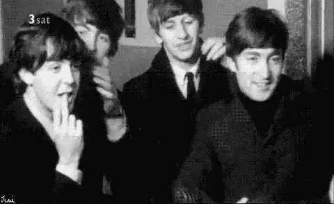

Los Beatles:
Antes de alcanzar la fama, la banda inglesa consiguió un contrato con la productora Decca Recording,
que grabó 15 de sus canciones. Sin embargo, los productores no quedaron complacidos con el grupo y les dijeron: ‘No nos gusta cómo suenan, no tienen futuro en la música’.
